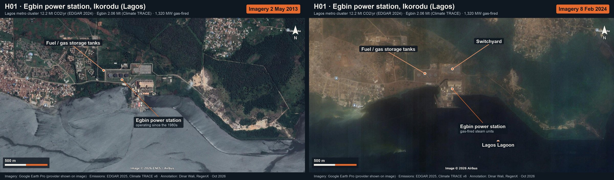
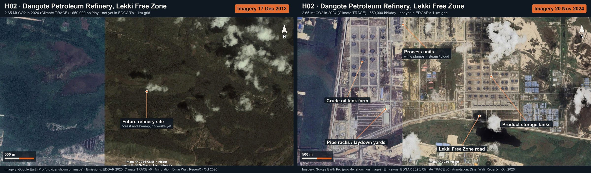
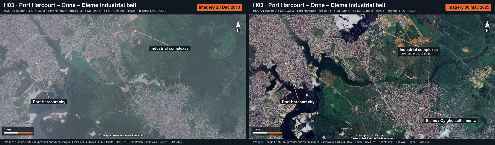
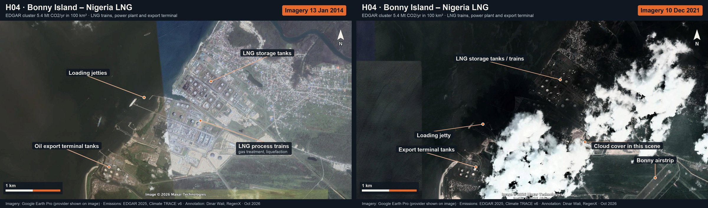
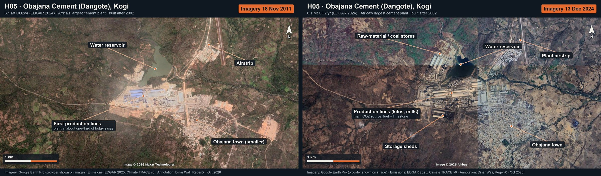
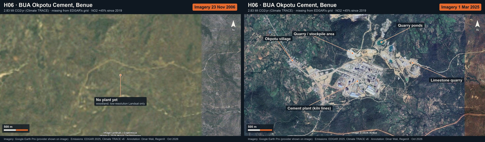
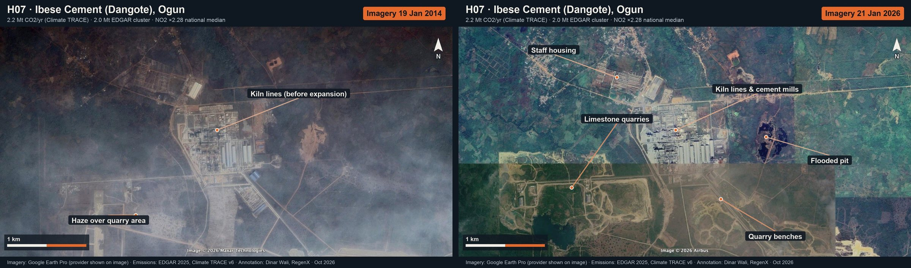
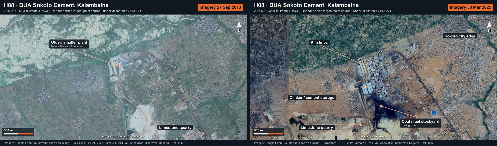
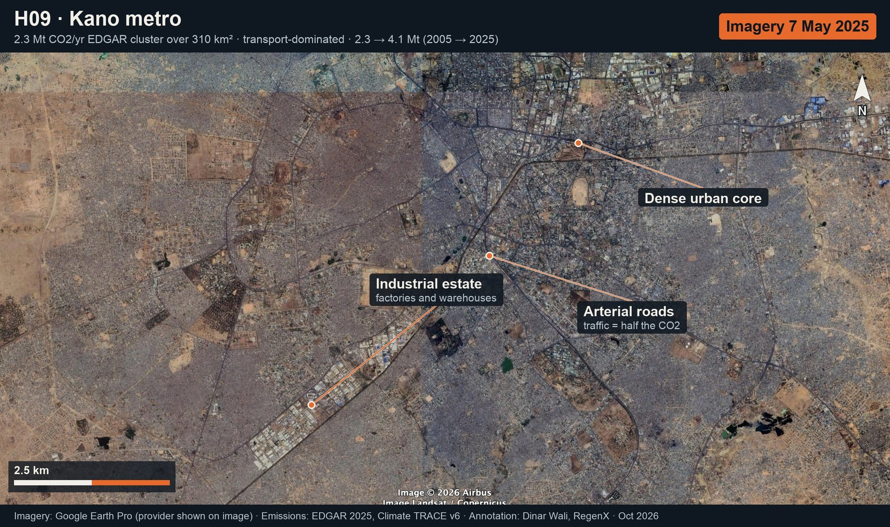
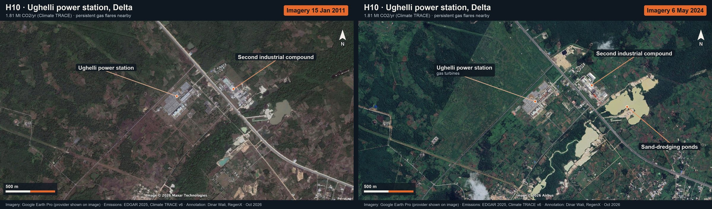
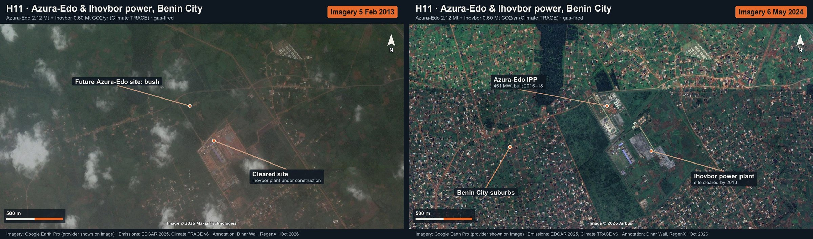
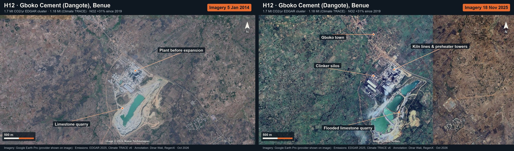
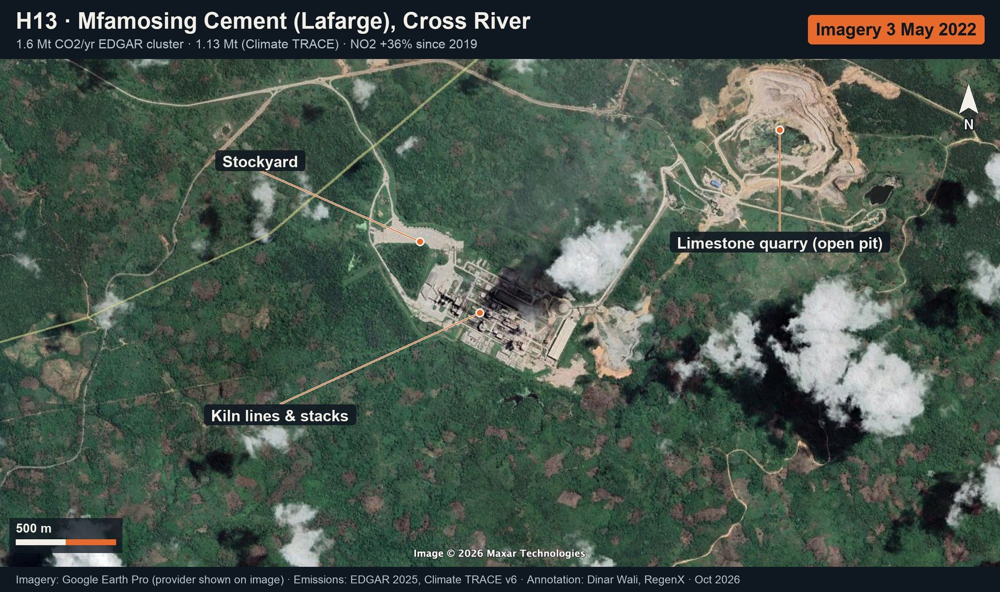
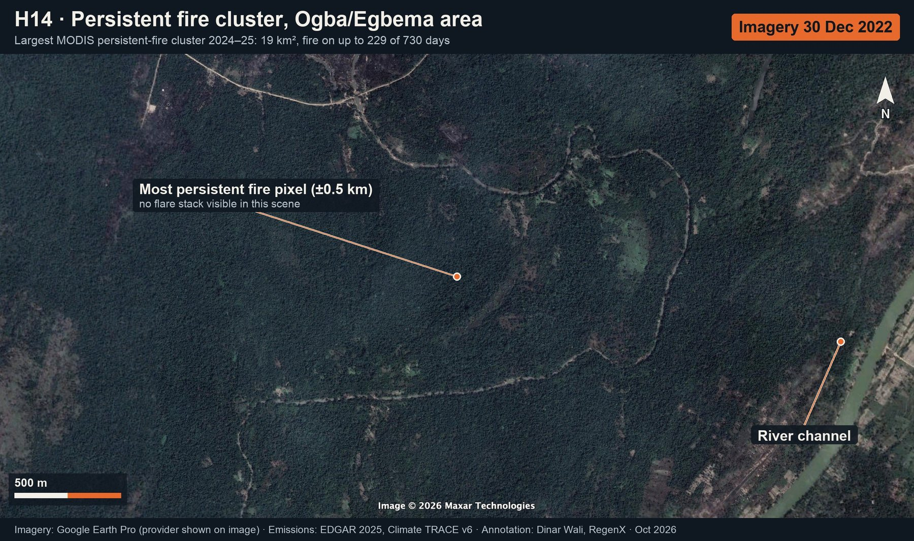
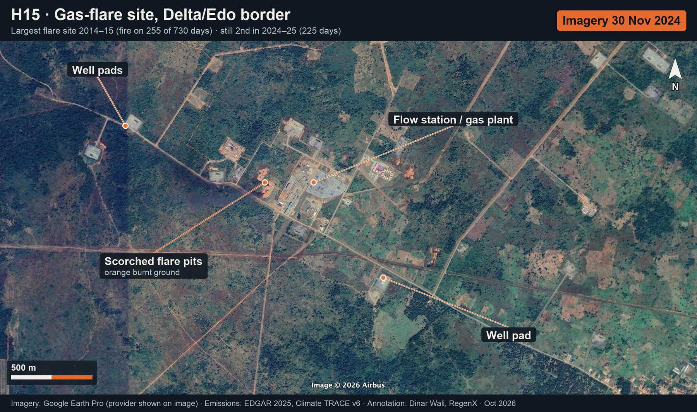
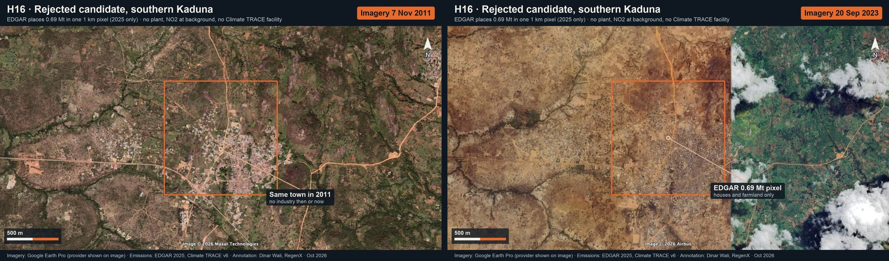
Latest and historical Google Earth Pro imagery for every candidate hotspot, annotated feature by feature. Left panel: historical view (2006–2014). Right panel: latest view (2021–2026). Imagery remains © its providers (Airbus, Maxar Technologies, CNES, Landsat/Copernicus) as credited on each image.















